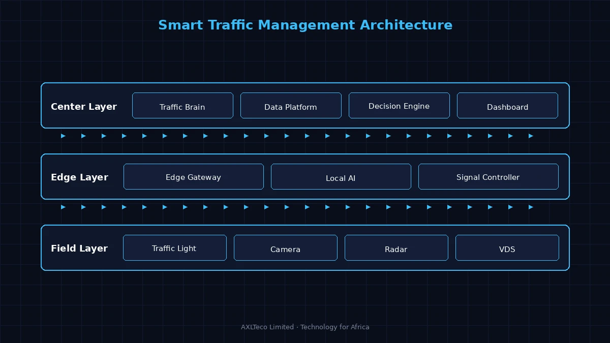
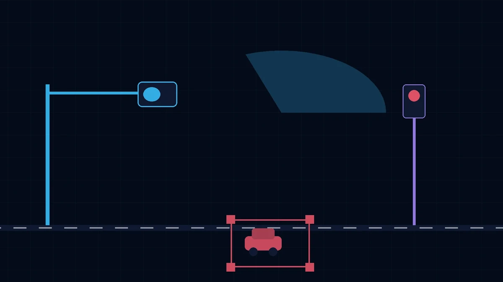

Solution Architecture

Intelligent Traffic Management Architecture
The smart traffic system adopts a three-tier "Front-end Perception - Edge Computing - Central Analysis" architecture. The front-end deploys video detectors, radar, and signal controllers; the edge layer implements real-time traffic data processing and signal optimization; the central platform handles traffic situation analysis, command dispatch, and decision support.
Solution Components
Application Architecture
The traffic management platform includes six core subsystems: signal control, video surveillance, violation detection, flow analysis, guidance publishing, and transit priority. All subsystems interconnect through a unified data bus, supporting both single-point independent operation and regional coordinated control to adapt to cities of different sizes.
Application Scenarios
Intersection Signal Optimization
Adaptive signal timing based on real-time traffic flow to reduce vehicle waiting time.
Arterial Green Wave Coordination
Coordinated signal control across adjacent intersections to enable smooth passage along main roads.
Regional Traffic Dispersion
Peak-hour regional traffic balancing control to prevent local congestion from spreading.

Intelligent Violation Capture
Automatic recognition and evidence collection for red-light running, speeding, and wrong-way driving.
Solution Advantages
The system is compatible with multiple mainstream signal controller brands at home and abroad, protecting existing investments. AI video analysis technology eliminates the need for destructive road surface coil installation, with short construction cycles and low maintenance costs. Open data interfaces support integration with city traffic command centers and map service providers.
Solution Value
Improve road capacity, reduce traffic accidents, optimize public transit services, and provide data support and decision-making basis for urban traffic management.
Project Practice
AXLTeco has participated in the low-voltage and intelligent system construction for transportation infrastructure including Lagos Mile 2 Integrated Transport Hub, Lagos Light Rail Blue Line Phase 5, and Kano Railway Station, accumulating engineering implementation experience in the transportation sector.